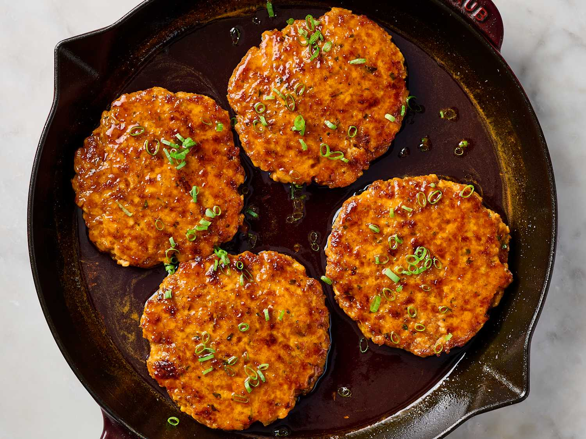

<-Home
Harissa Orange Salmon Patties Recipe

Description
The best weeknight dinners have a short ingredient list, require minimal
hands-on prep, and come together quickly at a time of day when my energy
is fading. Did I mention that it helps when those dinners taste amazing
too? Some of my favorite meals that check all of these boxes include
creamy pepperoncini chicken skillet, one-pot Cajun pasta, and this recipe
for harissa orange salmon patties.
These patties start like most other salmon or tuna cakes, by binding fresh
or canned salmon together with breadcrumbs and an egg. They’re seasoned
with orange zest and harissa paste, then seared until golden-brown and
finished with a sweet-and-spicy glaze made from honey, orange juice, and
harissa paste. It’s so delicious and simple to make that it’s become a
weekly staple in my kitchen. Once you try it, it might become one of your
favorites too.
Ingredients
- Finely grated zest from 1 medium orange (about 2 tablespoons)
- 1 large egg
- 3 tablespoons harissa paste, divided
- 3/4 teaspoon kosher salt
- 3 medium scallions
-
2 tablespoons fresh cilantro leaves (8 sprigs), plus more for garnish
- 1 pound skinless salmon fillets, cut into 1-inch pieces
- 2/3 cup panko breadcrumbs
- 1/4 cup freshly squeezed orange juice (from 1 medium orange)
- 3 tablespoons honey
- 1 tablespoon olive oil
Steps
-
Whisk the finely grated zest from 1 medium orange, 1 large egg, 2
tablespoons of the harissa paste, and 3/4 teaspoon kosher salt together
in a large bowl.
-
Coarsely chop the white parts of 3 medium scallions and add to a food
processor. Finely chop the scallion greens and reserve for garnish.
-
Add 2 tablespoons fresh cilantro leaves to the food processor and pulse
until the scallions are broken down into very small pieces, 4 to 6
(1-second) pulses. Add 1 pound skinless salmon pieces and pulse until
coarsely ground, 8 to 10 (1-second) pulses.
-
Add the salmon mixture and 2/3 cup panko breadcrumbs to the egg mixture.
Gently fold together with a flexible spatula until combined.
-
Divide the salmon mixture into 4 portions (about 3/4 cup or 5 ounces
each). Form each one into a patty about 1 inch thick and 3 1/2 inches
wide.
-
Whisk 1/4 cup orange juice, 3 tablespoons honey, and the remaining 1
tablespoon harissa paste together in a small bowl.
-
Heat 1 tablespoon olive oil in a large (12-inch) nonstick or cast iron
skillet over medium heat until shimmering. Swirl so that the oil coats
the bottom of the pan. Using a wide, flat spatula, gently transfer the
patties to the pan and cook until golden-brown on the first side, 3 to 4
minutes. Flip the patties and cook for 1 minute.
-
Reduce the heat to medium-low and pour the sauce over the patties. Cook,
spooning some of the sauce over the patties as they cook, until the
sauce is thickened and the salmon is just cooked through, about 3
minutes. An instant-read thermometer inserted into the center of the
salmon patties should register at least 125°F. Garnish with the scallion
greens and chopped fresh cilantro leaves if desired.